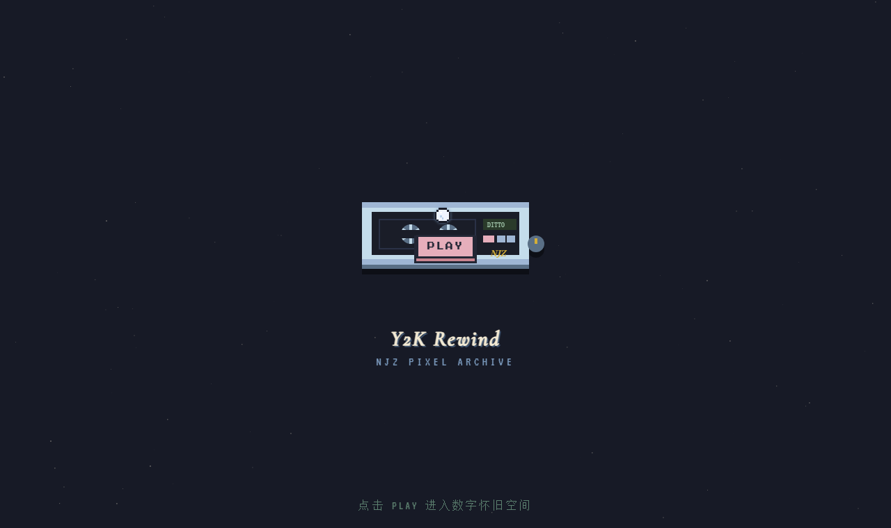
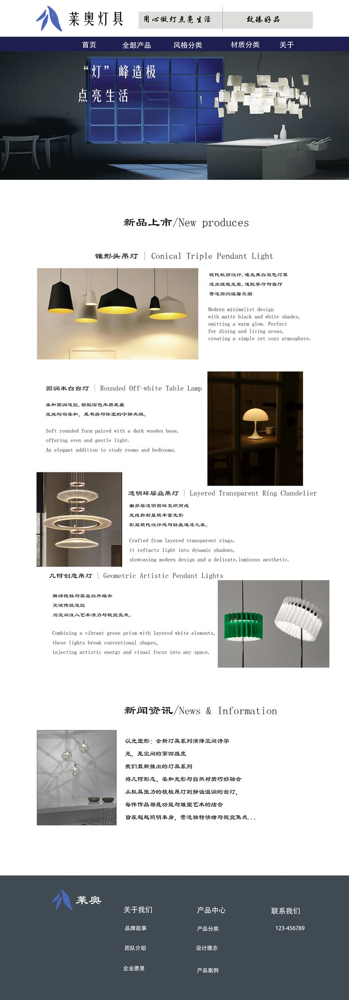
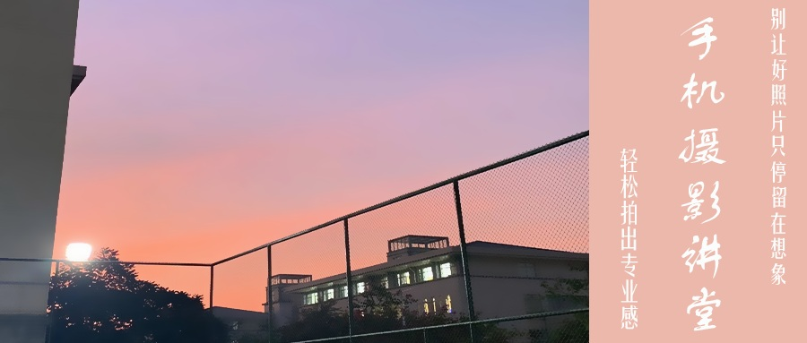
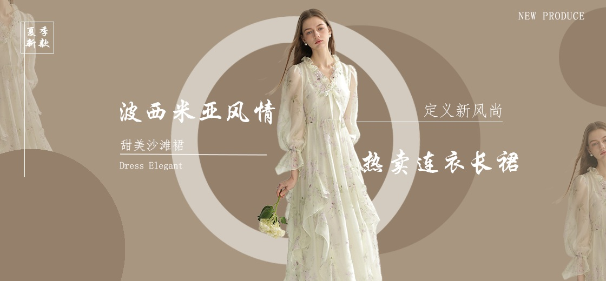

Personal Site · UI Design
软件技术专业在读，UI 设计方向。喜欢摄影，也喜欢把看到的美好做成能点开的页面。
Scroll ↓
Projects
散落的作品卡片，滑动或点击展开成扇形；展开后继续前进，再点单张可放大细看。
点击展开 / 收起
2026.09 · 技术栈：WordPress / Elementor / AI 绘图 / SEO 基础
独立完成企业官网，从需求沟通到上线运营全流程。
核心成果：使用 Elementor 搭建响应式企业官网；AI 生成 Banner 及产品图，节省 70% 图片素材时间；网站上线后完成 Google SEO 基础优化。

Y2K 像素风互动网页，磁带机界面 + 数字怀旧空间，已上线。

灯具品牌官网：新品展示、新闻资讯与品牌信息模块设计。

「轻松拍出专业感」主题横幅，黄昏摄影场景 + 竖排文字。

波西米亚风连衣裙促销 banner，浅棕暖调主推版。
同一主题的灰绿冷调方案，双版式 A/B 对比。
新作品正在打磨，完成后第一时间放上来。
Notes
踩坑记录、学习总结、复盘——分享理解，而不是堆资料。
Contact